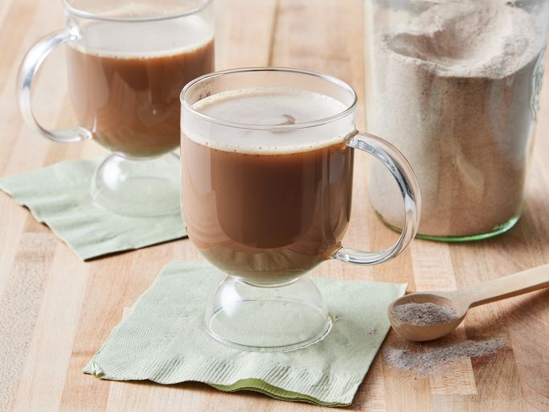

CHAI

Ingredients
- 2 ½ cups white sugar
- 1 ½ cups unsweetened instant tea
- 1 cup nonfat dry milk powder
- 1 cup powdered non-dairy creamer
- 1 cup French vanilla flavored powdered non-dairy creamer
- 2 teaspoons ground ginger
- 2 teaspoons ground cinnamon
- 1 teaspoon ground cloves
- 1 teaspoon ground cardamom
Steps
-
Gather the ingredients.
-
Combine sugar, instant tea, milk powder, nondairy creamer,
and vanilla-flavored creamer in a large bowl. Stir in ginger, cinnamon, cloves,
and cardamom.
-
Blend 1 cup at a time in a food processor or blender until a fine powder.
-
Stir 2 heaping tablespoons chai tea mix into a mug of hot water for 1 serving.